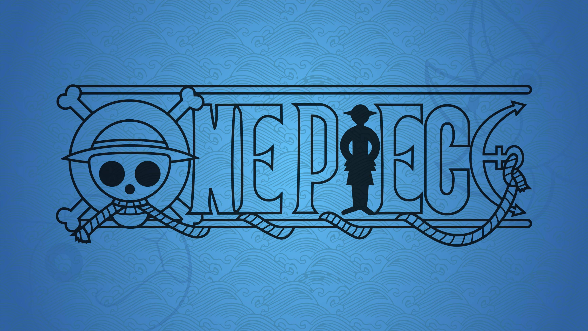
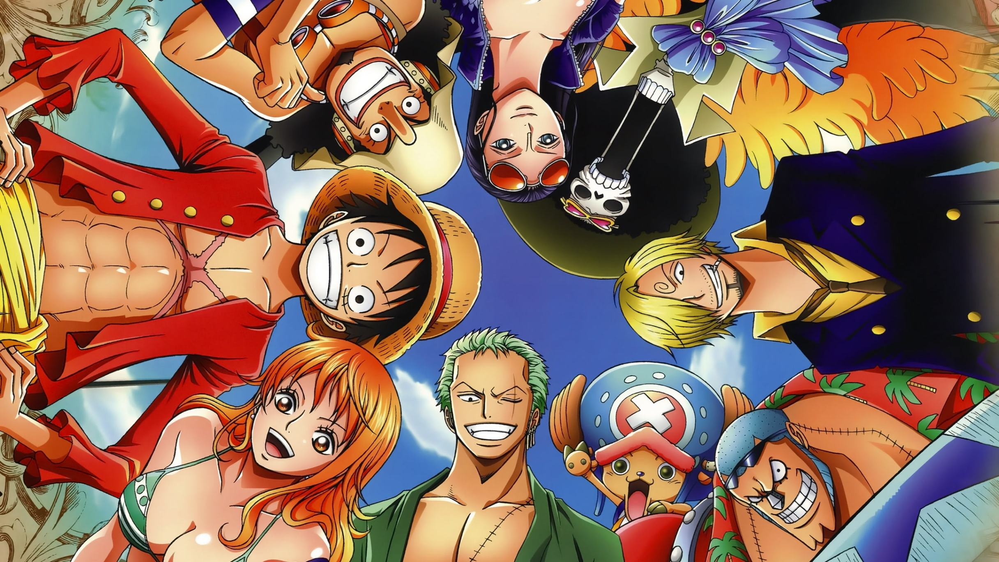
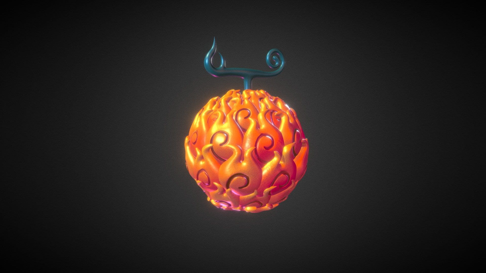
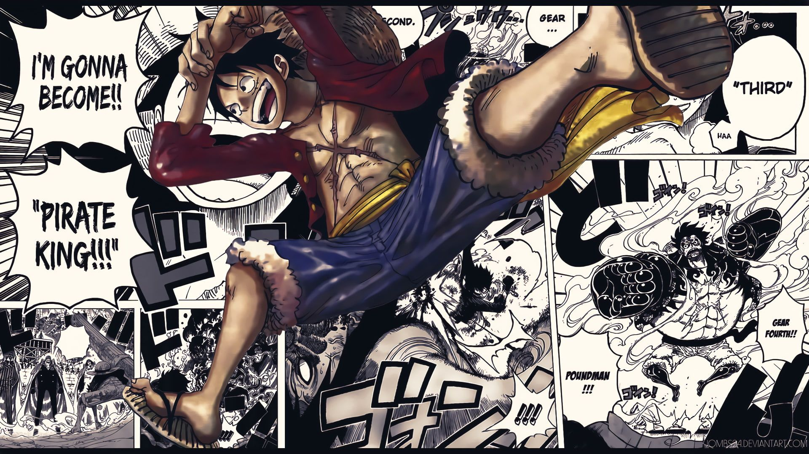
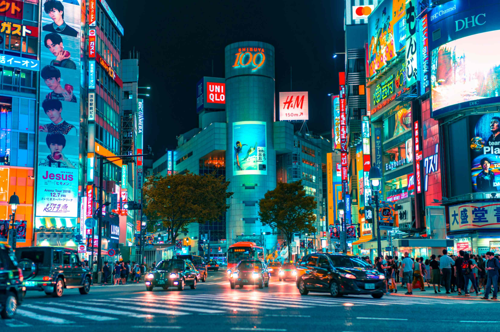

Pengenalan

One Piece adalah seri manga dan anime yang sangat populer,
diciptakan oleh Eiichiro Oda. Seri ini pertama kali diterbitkan
dalam majalah Weekly Shonen Jump pada 22 Juli 1997 dan sejak itu
telah menjadi salah satu fenomena budaya terbesar di dunia hiburan
Jepang. Manga ini telah mencatat rekor penjualan yang luar biasa,
dengan lebih dari 480 juta kopi terjual di seluruh dunia per 2021,
menjadikannya manga terlaris sepanjang masa. One Piece juga telah
diadaptasi menjadi serial anime oleh Toei Animation, yang pertama
kali ditayangkan pada 20 Oktober 1999 dan terus berlanjut hingga
hari ini dengan ratusan episode yang telah ditayangkan.
Selain itu, One Piece telah melampaui batasan media tradisional
dengan merambah ke berbagai bentuk media lainnya seperti film
animasi, video game, novel, dan berbagai merchandise. Popularitasnya
yang mendunia tidak hanya terbatas pada Jepang, tetapi juga meluas
ke seluruh penjuru dunia, dengan terjemahan ke berbagai bahasa dan
komunitas penggemar yang aktif di setiap benua. Kekuatan utama dari
One Piece terletak pada alur ceritanya yang mendalam dan
karakter-karakter yang kuat dan beragam, yang mampu menarik
perhatian berbagai kalangan usia dan latar belakang. Dengan
kombinasi yang unik antara aksi, petualangan, humor, dan emosi, One
Piece terus mempertahankan relevansinya dan popularitasnya di
industri hiburan global.
Alur Cerita

One Piece mengikuti petualangan Monkey D. Luffy, seorang bajak laut
muda yang bercita-cita menjadi Raja Bajak Laut dengan menemukan
harta karun legendaris yang disebut "One Piece." Luffy memiliki
kekuatan luar biasa setelah memakan Buah Iblis Gomu Gomu, yang
memberinya kemampuan tubuh elastis seperti karet, tetapi juga
membuatnya tidak bisa berenang.
Luffy memulai petualangannya dengan membentuk kru bajak laut yang
disebut Bajak Laut Topi Jerami. Anggota kru ini termasuk:
Roronoa Zoro: Pendekar pedang yang bercita-cita menjadi pendekar
pedang terkuat di dunia. Nami: Navigator dan kartografer yang sangat
berbakat. Usopp: Penembak jitu yang juga pandai dalam menciptakan
alat dan gadget. Sanji: Koki yang sangat handal dan juga seorang
petarung. Tony Tony Chopper: Dokter yang juga merupakan rusa kutub
yang bisa berubah bentuk setelah memakan Buah Iblis Hito Hito. Nico
Robin: Arkeolog yang bisa memunculkan bagian tubuhnya di mana saja
setelah memakan Buah Iblis Hana Hana. Franky: Tukang kayu yang juga
seorang cyborg. Brook: Musisi yang juga merupakan tengkorak hidup
setelah memakan Buah Iblis Yomi Yomi. Jinbe: Mantan kapten bajak
laut dan seorang manusia ikan yang juga ahli bela diri.
Lebih Dalam
One Piece tidak hanya menawarkan petualangan yang epik tetapi juga
menghadirkan dunia yang sangat luas dan beragam. Dunia ini terdiri
dari lautan luas yang dihuni oleh berbagai pulau eksotis,
masing-masing dengan budaya, fauna, dan flora yang unik. Ada
negara-negara besar yang diperintah oleh pemerintahan dunia yang
korup, serta kekuatan besar seperti Revolusioner dan bajak laut yang
beroperasi di luar hukum. Setiap pulau memiliki cerita dan
konfliknya sendiri, yang sering kali menjadi latar belakang bagi
petualangan Luffy dan kru Topi Jerami.
Buah Iblis

Berada di jalur utama Bandung-Lembang, Farm House menjadi objek
wisata yang tidak pernah sepi pengunjung. Selain karena letaknya
strategis, kawasan ini juga menghadirkan nuansa wisata khas Eropa.
Semua itu diterapkan dalam bentuk spot swafoto Instagramable.
Ongoing Storytelling

Memiliki beberapa teleskop, antara lain, Refraktor Ganda Zeiss,
Schmidt Bimasakti, Refraktor Bamberg, Cassegrain GOTO, dan
Teleskop Surya. Refraktor Ganda Zeiss adalah jenis teleskop
terbesar untuk meneropong bintang. Benda ini diletakkan pada atap
kubah sehingga saat teropong digunakan, atap tersebut harus
dibuka. Observatorium Bosscha boleh dikunjungi oleh siapapun,
tanpa tiket. Namun, bagi yang ingin menggunakan teleskop Zeiss,
wajib mendaftarkan diri. Untuk instansi atau lembaga pendidikan,
diberikan jadwal hari Selasa sampai Jumat. Sementara itu,
kunjungan individu dibuka setiap hari Sabtu.
Pengaruh Budaya

One Piece tidak hanya memengaruhi genre manga dan anime, tetapi
juga mempengaruhi budaya populer Jepang secara luas.
Karakter-karakternya telah menjadi ikon budaya, dengan merchandise
yang melimpah dan kolaborasi dengan merek terkenal lainnya. Manga
ini juga sering kali menyoroti tema-tema sosial dan politik yang
relevan, menjadikannya lebih dari sekadar cerita petualangan
biasa.
Dengan segala keunikan dan kedalaman ceritanya, One Piece terus
menjadi salah satu karya seni populer terbesar di dunia, menarik
jutaan penggemar dari berbagai generasi dan budaya.